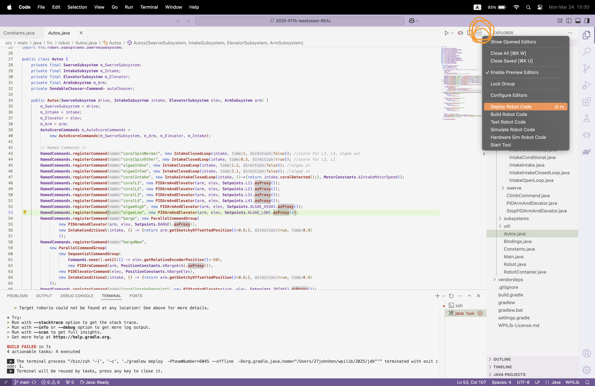
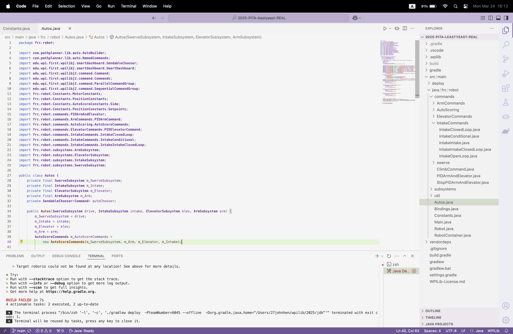
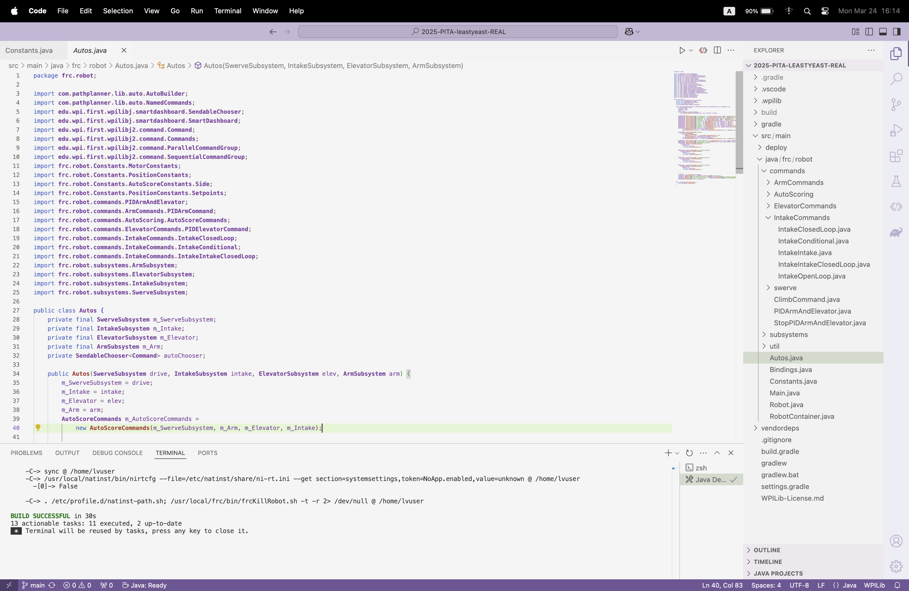

Home / How-To Guides / Deploy code
How to Deploy Code
- Connect to the robot.
- Open WPILib VS Code.
- Click the three dots in the top right corner of VS Code (circled in orange).

- Click the button that says Deploy Robot Code (highlighted in orange).
After this, a message will appear near the bottom of VS Code:
Red means the deployment failed — most likely, the computer was not connected to the robot.

Green means the deployment succeeded.
